Rundgang durch die Hardware des C 128
Wir zeigen Ihnen, was alles im C 128 steckt. In einem »Rundgang« über die Platine des C 128 erklären wir die Funktionen der einzelnen Bauteile und was man damit anfangen kann.
Teilweiser Nachdruck aus 64'er 6/85, S. 16 (nur der Abschnitt über MMU und Konfigurationsregister) und 64'er 7/85, S. 17 (nur Schlußfolgerung und Z80-Registertabelle). Der übrige Artikel ist für dieses Sonderheft neu geschrieben.
Seit etwa einem halben Jahr gibt es ihn schon, den neuesten aus dem Hause Commodore, den C 128. Einerseits wartet der C 128 mit so mancher angenehmen Überraschung auf, wie etwa 128 KByte RAM, dem CP/M-Modus und der Kompatibilität zum C 64. Andererseits läßt aber auch er nicht die von Commodore, und auch anderen Computerherstellern gewohnten »Kompromisse« vermissen. Zu nennen wäre da beispielsweise die Tatsache, daß man einen Monitor braucht der sowohl RGB- als auch compositefähig ist, um sämtliche Grafikmöglichkeiten auszunützen, die im C 128 stecken. Bei einem Blick auf die Platine des C 128 trifft man manchen vom C 64 her bekannten Baustein. Den Sound-Chip SID 6581 etwa, oder den Complex-Interface-Adapter CIA 6526. Bild 1 zeigt die »nackte« Platine. Sämtliches »Drumherum« wie Gehäuse, Tastatur etc. wurde entfernt. Man erkennt deutlich, daß es auf der Platine des C 128 viel gedrängter zugeht als auf der Platine des C 64, zu dem der C 128 ja 100%ig kompatibel sein soll. Bei dieser Aussage kam natürlich Skepsis in uns auf und wir testeten eine Vielzahl von verschiedenen Programmen, die intensiven Gebrauch von den Eigenheiten des C 64 machen (Illegal Opcodes und Betriebssystem-Routinen). Das Ergebnis war überraschend, denn der C 128 zeigte sich im C 64-Modus fast vollkommen kompatibel zu seinem Vorgänger.
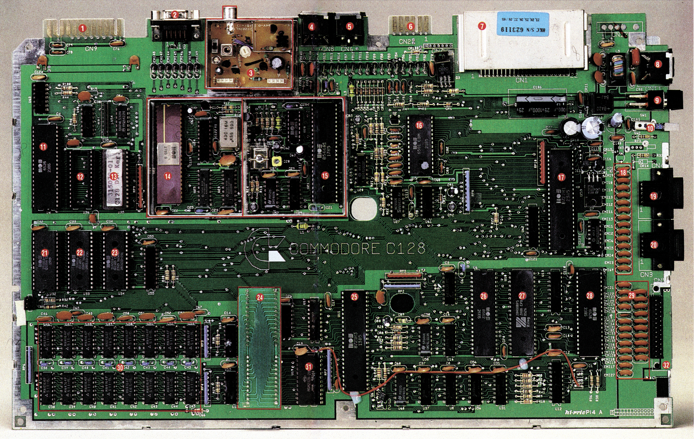
- User-Port
- Der RGB-Ausgang ist anschlußkompatibel zu IBM-Farb- und Schwarzweiß-Monitoren. Die 80-Zeichendarstellung geht nur über diesen Ausgang.
- HF-Modulator. Hier wird ein Hochfrequenz-Bildsignal erzeugt, das ein normaler Fernseher »versteht«.
- Der Video-Audio-Port entspricht dem des C 64. Er dient zur 40-Zeichen- und Grafikdarstellung.
- Der serielle Port des C 128 entspricht dem des C 64. Im C 128-Modus arbeitet er aber etwa 8mal schneller.
- Kassetten-Port.
- Expansion-Port für den C 64- und C 128-Modus.
- Netzteilanschluß.
- Ein-/Ausschalter.
- Reset-Taster.
- CIA 2. I/O-Baustein für den User-Port und den seriellen Bus.
- 32 KByte ROM. Frei für eigene ROMs.
- 16 KByte ROM. C 128, Betriebssystem (Kernel) und 40/80-Zeicheneditor.
- RGB-Teil. Links der 80-Zeichen-Videocontroller 8563 (RGB). Rechts unten, das 16-KByte/8-Bit-Video-RAM für den 8563.
- Composite-Video-Teil. Rechts der VIC 8564, der dem VIC aus dem C 64 beinahe identisch ist. Er enthält einen eigenen Grafikprozessor.
- Der inzwischen schon altbekannte SID, der 6581 aus dem C 64.
- Die MMU bestimmt aus welchem Speicherteil der nächste Zugriff stattfinden soll.
- Entprell-Kondensatoren für Control-Ports.
- Control-Port 2.
- Control-Port 1.
- Betriebssystem- und Basic-ROM für den C 64-Modus. 16 KByte ROM.
- 16 KByte ROM. C 128, Basic Teil 2.
- 16 KByte ROM. C 128, Basic Teil 1.
- Unter dieser »abenteuerlichen« Konstruktion befindet sich der deutsche und der ASCII-Zeichensatz.
- Die PLA, ein 8721. Die PLA ist ein Gatterbaustein mit programmierbaren Logikfunktionen. Sie bestimmt, neben der MMU, welche ROMs aktiviert werden.
- Der 8502-Prozessor.
- Die Z80B-CPU.
- CIA 1. Hier werden die gedrückten Tasten festgestellt und die Control-Ports abgefragt.
- Entprell-Kondensatoren der Tastatur.
- 128 KByte RAM. 16 8-KByte/8-Bit-RAMs.
- 2-KByte/8-Bit-CMOS-RAM. Der Farbspeicher für den VIC 8564.
- Tastatur-Steckerliste.
Der C 128 bietet eine ganze Menge verschiedener Betriebsmodi. Nach dem Einschalten liegt die eigentliche C 128-Betriebsart vor, in der sich der neue Basic-Interpreter 7.0 von seiner besten Seite zeigt. Weitere Modi sind der bereits erwähnte C 64-Modus und der CP/M-Modus. Im CP/M-Modus verhält sich der C 128 wie eine echte CP/M-Maschine, ist aber bedingt durch die geringere Taktfrequenz nicht ganz so schnell. Für den CP/M-Modus erhielt der C 128 neben dem Prozessor 8502 (kompatibel zur 65xx-Familie) einen Z80 B-Prozessor.
Neben den drei verschiedenen Modi kann der Benutzer, außer im CP/M-Modus, die Taktfrequenz auf 1 MHz oder 2 MHz festlegen, allerdings mit Einschränkungen.
Bekannte Hardware
In Bild 1 sind die einzelnen Bauelemente und Baugruppen bezeichnet. Wir wollen nun einen kleinen Rundgang über die Platine des C 128 machen und uns dabei die Aufgaben und Funktionsweisen der verschiedenen Bauteile verdeutlichen. Unser Wanderweg startet rechts oben am Netzteilanschluß, ohne den ja nichts »laufen« würde. Ohne elektrischen Strom, sprich Elektronen, kann bekanntlich kein Computer funktionieren. Wir marschieren also weiter in Richtung des unteren Platinenrandes und kommen dabei am Ein/Aus-Schalter vorbei, dessen Funktion wohl auch bekannt sein dürfte. Lassen wir ihn also rechts liegen und gehen weiter in Richtung Platinenrand. Gleich neben dem Ein/Aus-Schalter liegt der Reset-Taster, der bei Commodore bis vor kurzem keineswegs Standard war. Ein Druck auf diesen Taster setzt den Computer in den Einschaltzustand zurück. Besonders sinnvoll ist der Reset-Taster für Assembler-Programmierer. Es kommt nur allzuoft vor, daß ein Maschinenprogramm nicht auf Anhieb so funktioniert, wie es eigentlich geplant war. Meist endet ein solches Maschinenprogramm in einer endlosen Schleife, aus der der Computer dann mit dem Reset-Taster »zurückgeholt« werden kann.
Doch gehen wir weiter auf den unteren Rand der Platine zu, und bleiben etwa zwischen den beiden Control-Ports (Bild 2 und Bild 3) stehen. Ein Blick zwischen den Entprellkondensatoren hindurch zeigt am rechten Rand die zwei Control-Ports. Diese Control-Ports sind mit denen des C 64 vollkommen identisch. Es können hier zwei Joysticks oder vier Paddles angeschlossen werden. Lightpen und Trackball werden ebenfalls über diese Schnittstelle mit dem Computer verbunden. Die Steuerung der Control-Ports erfolgt über CIA 1, an der wir noch vorbeikommen werden. Die vielen Kondensatoren bis hinunter zur Tastatur-Anschlußleiste haben die Aufgabe, die Kontakte des Joysticks und der Tastatur elektrisch zu »entprellen«. Wird ein mechanischer Schalter geschlossen, ist im Gegensatz zu elektronischen Schaltern, wie zum Beispiel einem Transistor, zu beobachten, daß der Kontakt, bevor er endgültig zustandekommt, einige Male unterbrochen wird.
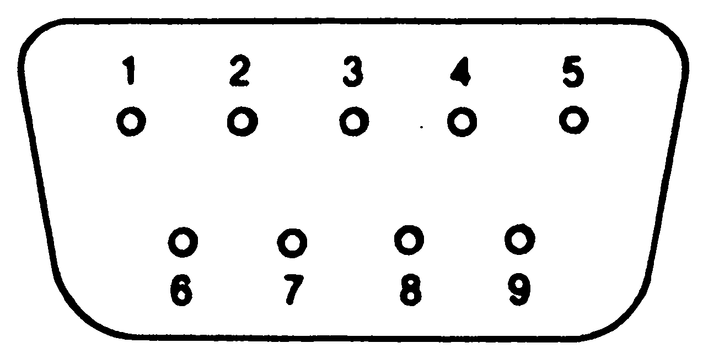
| Pin | Signal | Bemerkung |
|---|---|---|
| 1 | JOYA0 | |
| 2 | JOYA1 | |
| 3 | JOYA2 | |
| 4 | JOYA3 | |
| 5 | POT AY | |
| 6 | BUTTON A/LP | |
| 7 | +5V | MAX. 100mA |
| 8 | GND | |
| 9 | POT AX |
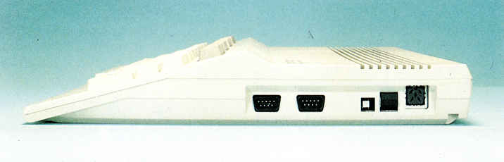
Der Elektroniker nennt dieses Phänomen »Kontaktprellen«. Bild 4 zeigt, wie die Entprellkondensatoren den Schaltimpuls »glätten«. Ohne die Entprellung könnte es unter Umständen dazu kommen, daß der Computer das Nachprellen des Kontaktes als weitere Tastendrücke interpretiert und so bei einem einmaligen Druck auf eine Taste gleich mehrmals das gewünschte Zeichen anzeigen würde.
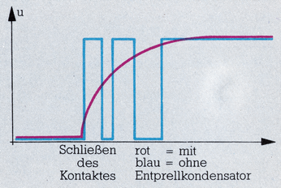
Wenden wir unsere Aufmerksamkeit aber einmal nach links. Dort sehen wir in ihrem relativ großen Gehäuse einen sehr wichtigen Baustein des C 128, die »Memory-Management-Unit« oder kurz MMU (Tabelle 1). Memory-Management-Unit bedeutet Speicherverwaltungs-Einheit, woraus auch schon die Funktion dieses eigens für den C 128 entwickelten Chips hervorgeht. Der C 128 verfügt über 128KByte RAM. Sie werden sich sicherlich gefragt haben, wie der 8502 und der Z80 (Tabelle 2) überhaupt auf einen solch großen Speicherraum zugreifen können. Beide sind ja bekanntlich wegen ihrer 16 Adreßleitungen nur zur Adressierung von 216 = 65536 Byte fähig. Commodores Entwickler haben deshalb zu einem Trick gegriffen, um 128 KByte RAM adressieren zu können, ohne einen leistungsfähigeren Prozessor einzusetzen. Die Lösung heißt »Bank-Switching«. Der Speicher von 128 KByte wird in zwei Speicher-Bänke von je 64 KByte unterteilt. Der Prozessor greift dann wechselweise auf die eine oder andere Speicherbank zu. Hier ist auch die Hauptaufgabe der MMU zu finden. Sie sorgt dafür, daß der Prozessor stets die richtige Speicherbank vorfindet.
| Mode Configuration Register | |
|---|---|
| Bits | Bedeutung |
| 7 | Stellung des 40/80-Zeichen-Schalters 0 = Schalter geschlossen 1 = Schalter offen |
| 6 | Betriebsart 0 = C128 1 = C64 |
| 5 | Bidirektionaler Port Eingang : /EXROM Ausgang : Farb-RAM-Bank während VIC aktiv |
| 4 | Bidirektionaler Port Eingang : /GAME Ausgang : Farb-RAM-Bank während CPU aktiv |
| 3 | FSDIR (Fast ser. disk) Kontrollbit Eingang : Fast serial disk enable Ausgang : für FSD-Hardware |
| 2,1 | Nicht benutzt |
| 0 | CPU-Einstellung 0 = Z80 1 = 8502 |
| Page Pointer, höherwertiges Byte | |
| Bits | Bedeutung |
| 7,6,5,4 | ohne Bedeutung |
| 3,2,1,0 | gewählte Bank (auch ROM möglich !) |
| Page Pointer, niederwertiges Byte | |
| Bits | Bedeutung |
| 7 bis 0 | Speicherseite innerhalb der 64K-Bank |
| System Version Register | |
| Bits | Bedeutung |
| 7,6,5,4 | verfügbare 64K-Bänke |
| 3,2,1,0 | Versionsnummer der MMU |
| Configuration Register | |
| Bits | Bedeutung |
| 7,6 | RAM-Bank-Auswahl 00 = Bank 0 01 = Bank 1 10 = Bank 2 11 = Bank 3 |
| 5,4 | Speicherbereich $C000-$FFF 00 = SYSTEM ROM (KERNAL, Char. ROM - I/O) 01 = INTERNAL FUNCTION ROM (hi) 10 = EXTERNAL FUNCTION ROM (hi) 11 = RAM |
| 3,2 | Speicherbereich $8000-$BFFF 00 = BASIC ROM (hi) 01 = INTERNAL FUNCTION ROM (lo) 10 = EXTERNAL FUNCTION ROM (lo) 11 = RAM |
| 1 | Speicherbereich $4000-$7FFF 0 = BASIC ROM (lo) 1 = RAM |
| 0 | Speicherbereich $D000-$DFFF 0 = I/O 1 = RAM/ROM (abhängig von Bits 4 und 5) |
| RAM Configuration Register | |
| Bits | Bedeutung |
| 7,6 | RAM-Bank des VIC (Bit 7 für Erweiterung) x0 = RAM-Bank 0 x1 = RAM-Bank 1 |
| 5,4 | Nicht benutzt (für Erweiterung auf 1 MByte) |
| 3,2 | Lage der gemeinsamen Speicherbereiche 00 = keine gemeinsamen Speicherbereiche 01 = Speicheranfang 10 = Speicherende 11 = Speicheranfang und -Ende |
| 1,0 | Größe des/der gemeinsamen Speicherbereiche 00 = 1 KByte 01 = 4 KByte 10 = 8 KByte 11 = 16 KByte |
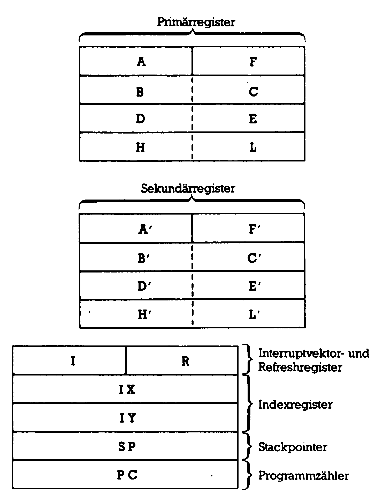
Wer allerdings glaubt, nun endgültig alle Speicherprobleme gelöst zu sehen, dem sei gesagt, daß, wie auch schon beim C 64, nicht der gesamte Speicherbereich für Basic-Programme zur Verfügung steht. Die zweite Bank (Bank 1) ist nämlich ausschließlich Basic-Variablen vorbehalten. Für die Programme bleibt also nur die erste Speicherbank frei (Bank 0) und von dieser zweigt sich das Betriebssystem noch einmal etwa 4 KByte für Zero-Page, Prozessorstack und Bildschirmspeicher etc. ab.
Zero-Page und Stack erscheinen natürlich auch in Bank 1, denn der Prozessor kann ohne seinen Stack nicht auskommen. Es ist auch nicht möglich, den Basic-Speicher auf Kosten des Variablen-Speichers zu erweitern. Allerdings kann der Hauptspeicher noch um zwei Bänke von je 64 KByte RAM erweitert werden, was dann einen Speicher von 256 KByte ergibt. Der Benutzer kann sich Speicherblöcke von 1 bis 16 KByte definieren und diese an den Speicheranfang, das Speicherende oder an beide Orte gleichzeitig legen. Der Inhalt dieser Bereiche ist dann auf beiden Banken der gleiche. Das dürfte vor allem von Vorteil sein, wenn zwei Programme, auf verschiedenen Bänken, die gleichen Daten benutzen sollen. Zur Definition dieser Bereiche hat die MMU das RAM Configuration Register (RCR). Neben der Verwaltung des Schreib/Lese-Speichers ist die MMU aber auch noch für den ROM-Bereich zuständig. Sie sagt dem Prozessor, ob er seine Daten aus einem internen Kernel-ROM holen soll, oder aus einem externen ROM oder EPROM auf einem Steckmodul.
Speicher-Verwaltungsstelle: Die Configuration Register
Die interessantesten Register der MMU sind das schon erwähnte RAM Configuration Register und das Configuration Register (CR). Das CR kontrolliert die ROM-, RAM- und die I/O-Konfiguration des C 128. Das Register hat die Adresse $D500 im I/O- und $FF00 im Kernel-Bereich. Das CR bei $D500 wird nur bei I/O-Zugriffen benötigt. Die MMU stellt sich dann das Register selbst ein. Findet kein I/O-Zugriff statt, ist das CR, mit den gesamten I/O-Routinen, in der Memory-Map nicht vorhanden, im Gegensatz zum CR bei $FF00, das ständig in der Memory-Map präsent ist.
Bit 0 des Configuration Registers (CR) regelt im C 128-Modus den Speichertyp zwischen den Adressen $8000 und $BFFF. Sind beide Bits »0«, wird auf den oberen Basic-Teil in der Memory-Map (Bild 5), also den zweiten Basic-ROM-Teil zugegriffen.
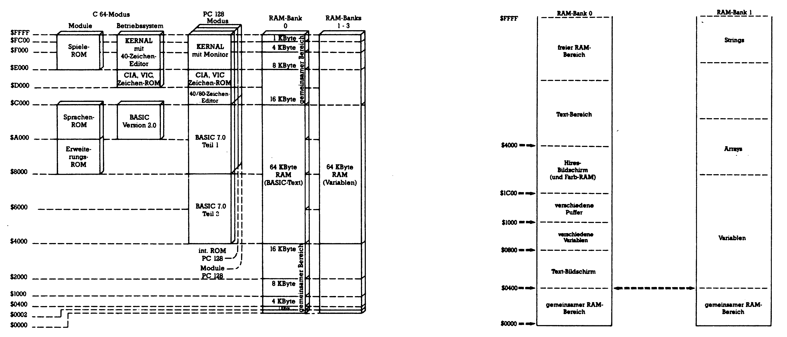
Ist Bit 2 »1«, wird ein internes ROM eingeblendet, das ROM des deutschen Zeichensatzes. Die Tastatur besitzt dann die DIN-Belegung. Richtig interessant wird es erst, wenn nur Bit 3 »1« ist, dann wird nämlich im Bereich von $8000 bis $BFFF ein Steckmodul eingeblendet. Sind beide Bits »1« sieht der C 128 in diesem Bereich nur RAM.
Die nächsten beiden Bits, 4 und 5, haben die gleiche Funktion wie Bit 2 und 3, nur bestimmen sie den Speicheraufbau im Bereich von $C000 bis $FFFF. Zu bemerken ist, daß der Speicherbereich von $D000 bis $DFFF ein »ROM-Loch« darstellt. Man kann die Bits 4 und 5 setzen wie man will, der Computer entscheidet, ob I/O-Bereich oder das Zeichensatz-ROM in diesem Bereich eingeblendet wird. Es ist also bei einem Steckmodul zu berücksichtigen, daß der Bereich von $D000 bis $DFFF tabu ist. Es können bis zu 32 KByte ROM eingeblendet werden, doppelt so viel wie beim C 64. Bit 6 und 7 schließlich selektieren die RAM-Bank. Für die 128 KByte-Version des C 128 ist nur Bit 6 wichtig. Ist es »0«, so ist Bank 0 ausgewählt, ist es »1«, Bank 1.
Welche CPU und welche Betriebsart (C 64, C 128 oder CP/M) eingeschaltet ist, kann mit dem »Mode Configuration Register« eingestellt werden (Tabelle 1). Mit den »Page-Pointer-Registern« wurde im C 128 ein Verlagern von Zero-Page und Stack (normalerweise von $0000 bis $00FF beziehungsweise $0100 bis $01FF) in beliebige andere Speicherseiten ermöglicht. Dadurch wächst der Speicherbereich mit der schnellen Zero-Page-Adressierung und auch der Datenbereich des Stacks beträchtlich an. Eine Neubesetzung der Page-Pointer muß immer zuerst am höherwertigen Byte erfolgen. Zu guter Letzt sei noch das Version Register beschrieben, das einzige Register, aus dem für die Betriebssoftware die Größe des verfügbaren Speichers ersichtlich ist. Außerdem ist hier auch noch die Versionsnummer der MMU untergebracht. Wie aus dieser Beschreibung hervorgeht, ist die MMU also keinesfalls ein toter Baustein.
Unser Rundgang nähert sich jetzt immer mehr dem unteren Platinenrand. Dabei sehen wir rechts die Anschlußleiste für die Tastatur. Links davon haben wir einen weiteren wichtigen Baustein, den Complex Interface Adapter CIA 6526, von dessen Sorte übrigens zwei im C 128 eingebaut sind. Die CIA ist ein Input/Output-Baustein. Der Prozessor kann über Bausteine mit seiner übrigen Umwelt in Verbindung treten. Die CIA besitzt zwei, voneinander unabhängige, bitweise auf Ein- oder Ausgang programmierbare Ports, die jeweils 8 Bit »breit« sind. Außerdem sind in einer CIA noch zwei 16-Bit-Timer integriert. Ein serielles Schieberegister fehlt ebensowenig wie eine 24-Stunden-Echtzeituhr.
Mit den Timern lassen sich in erster Linie bequem Interrupts auslösen, es sind jedoch auch andere Anwendungen möglich, zum Beispiel eine Zählung von Impulsen, die über einen Anschluß am User-Port zur CIA gelangen. Das serielle Schieberegister ist im C 128 unbenutzt. Der Ein/Ausgang des Schieberegisters ist am User-Port verfügbar. Mit diesem Schieberegister können zum Beispiel ein oder mehrere C 128 miteinander gekoppelt werden. Das Schieberegister dient dann zur Informationsübertragung. Die Echtzeituhr der CIA 6526 besitzt eine erhebliche Langzeitgenauigkeit, weil sie direkt mit der Netzfrequenz (50 Hz) getriggert wird. Die Handhabung der Echtzeituhr ist nicht ganz einfach, aber nach einiger Übung wird man das Vorhandensein dieser Uhr nicht mehr missen wollen. In der CIA sind 16 Steuerregister integriert. Um eines der Register anzusprechen muß einfach die Registernummer zur Basisadresse (CIA 1 = $DC00) addiert werden. Die sich durch diese Addition ergebende Adresse ist wie jede andere Speicherstelle zu behandeln. Die beiden Ports dieser CIA werden zur Abfrage von Tastatur und Joysticks verwendet und stehen dem Programmierer nicht zur freien Verfügung. Timer A benötigt der C 128 zur Erzeugung des IRQ-Signals. Timer B steht dem Benutzer zur Verfügung, wenn gerade keine Kassetten- oder Diskettenoperation erfolgt. Die IRQ-Ausgangsleitung dieser CIA ist direkt mit der IRQ-Leitung des Prozessors verbunden. Gleich links neben der CIA befinden sich die beiden »Herzhälften« des C 128: die beiden Prozessoren 8502 (links) und Z80 B (rechts). Die beiden, die ja sonst die gegensätzlichsten Konkurrenten auf dem Heimcomputermarkt sind und sich gegenseitig den Rang abzulaufen versuchen, befinden sich hier vereint nebeneinander auf der Platine des C 128. Vollkommen gleichberechtigt sind die beiden allerdings lange nicht. Außer im CP/M-Modus übernimmt der 8502 alle anfallende Arbeit. Maschinensprache-Programmierer haben allerdings die Möglichkeit, ihre Assemblerprogramme jetzt auch in Z80-Befehlen zu programmieren (zur Auswahl der CPU siehe unter MMU). Ein Vorteil des C 128 gegenüber dem C 64 liegt in der höheren Taktfrequenz der CPU. Der 8502 kann wahlweise mit 1 MHz oder 2 MHz getriggert werden, woraus ein Geschwindigkeitsvorteil von 100% gegenüber dem C 64 resultiert. Im C 64-Modus ist es ebenfalls möglich, durch »POKE 53296,1« die Taktfrequenz auf 2 MHz heraufzusetzen, wobei dann allerdings der Bildschirm verrückt spielt. Durch »POKE 53296,0« wird die Taktfrequenz auf 1 MHz zurückgesetzt. Der Z80 wird sogar mit 4 MHz getaktet, allerdings nur, wenn er interne Operationen ausführt wie zum Beispiel arithmetische Operationen. Greift er dagegen auf das Bussystem zu, so wird von einer entsprechenden Logik die Taktfrequenz auf 2 MHz reduziert. Der Z80 ist ja hinlänglich bekannt und millionenfach eingesetzt, vom Sinclair ZX81 bis zu den großen CP/M-Maschinen. Im Gegensatz zur 65xx-Prozessor-Familie handelt es sich beim Z80 ebenso wie beim 8080 um eine sogenannte »registerorientierte CPU«. Das bedeutet, daß der Z80 über eine größere Anzahl interner Register verfügt, die sowohl als Daten- wie auch als Adreßregister benutzt werden können.
Z80: Sechs 16-Bit-Register
Insgesamt stehen dem Benutzer des Z80 sechs allgemeine 16-Bit-Register (BC, DE, HL, BC', DE', HL') zur Verfügung, die wahlweise auch als zwölf 8-Bit-Register angesprochen werden können. Daneben gibt es zwei Akkus und ebenfalls zwei Flag-Register, zwei 16-Bit-Indexregister (IX und IY) einen 16-Bit-Stackpointer (SP) und natürlich einen Programmzähler (PC). Zwei weitere Register, das Interrupt-Vektor-Register I und das Refresh-Control-Register R haben spezielle Funktionen. Die Register AF, BC, DE und HL bilden die sogenannten Primärregister, die vom 8080 übernommen wurden und die in erster Linie direkt angesprochen werden können. Mit speziellen Befehlen kann zwischen diesen Primärregistern und den Sekundärregistern AF', BC', DE' und HL' umgeschaltet werden. Die Indexregister IX und IY haben ähnliche Aufgaben wie die 6502-Register X und Y, sind jedoch 16 Bit breit. Der Z80-Befehlssatz ist sehr umfangreich und umfaßt unter anderem auch 16-Bit-Arithmetik, Blockverschiebebefehle, automatische Such- und Ein-/Ausgabebefehle, bedingte Unterprogrammaufrufe sowie Einzelbitbefehle. Insgesamt kennt die Z80-CPU über 700 Opcodes. Um diese vielen Maschinenbefehle verschlüsseln zu können (mit einem Befehlsbyte können nur 256 Befehle codiert werden), gibt es einige spezielle Umschalt-Opcodes, die einfach bewirken, daß der Z80 intern auf eine andere Befehlstabelle umschaltet und das nächste Befehlsbyte in einer anderen Form interpretiert. Unser Rundgang führt uns jetzt vorbei an dem Programmable-Logic-Array PLA 8721. Dies ist ein vom Hersteller programmierter Baustein, der eine Fülle von logischen Gliedern wie AND, OR etc. enthält. Mit einem einzigen IC kann man so Logikschaltungen aufbauen, die sonst aus einer großen Anzahl einzelner Logik-ICs bestehen würden. Die Funktion dieses Bausteins ergibt sich im Zusammenhang mit der Memory-Management-Unit. Ebenso wie die MMU ist auch das PLA-IC für die Selektierung der ROMs zuständig.
Unser Weg durch die Hardware, der jetzt ein Stück in Richtung des oberen Randes verläuft, führt uns jetzt an der Stelle der Platine vorbei, die die größte Leiterbahnendichte aufweist. Hier handelt es sich vor allem um Daten- und Adreßleitungen, die zu den RAM-Bausteinen in der linken unteren Ecke der Platine führen. Der C 128 hat drei verschiedene Bussysteme (Bild 6). Zum einen existiert der »normale« Adreßbus, der zusammen mit dem Datenbus die verschiedenen ROMs, die beiden Prozessoren, den RGB-Video-Chip, die MMU und die I/O-Bausteine versorgt. Das zweite Bussystem ergibt sich aus dem Multiplexed-Adreß-Bus im Zusammenspiel mit dem Datenbus. Dieses Bussystem sichert die Zusammenarbeit des VICs mit dem Prozessor. Welche Daten über welche Leitungen fließen, bestimmt das MUX-Signal. Es wird von der MMU und der PLA erzeugt. Da die Erklärung der Funktion des Multiplexed-Adreß-Bus hier zu weit führen würde, nur ein Umriß: Er wird vom Prozessor zur Adressierung der beiden RAM-Bänke gebraucht, zur Adressierung der VIC-Register und für Zugriffe des VICs auf das Farb-RAM und das Zeichensatz-ROM. Das dritte Bussystem besteht aus dem Translated Adreßbus und dem Datenbus. Die Funktion des Translated Adreßbus, was soviel bedeutet wie »angepaßter Adreßbus«, ermöglicht das Arbeiten des Z 80 auf dem 8502-Bussystem. Im Z80-Modus wird zu jeder Adresse von Bank 0 aus dem Bereich von $0000 bis $0FFF $D000 addiert, damit der Z 80 auf das CP/M-BIOS, einem Basisprogramm von CP/M, zugreifen kann. Normalerweise liegt ja bei CP/M das BIOS im Bereich von $D000 bis $DFFF im RAM-Speicher. Da aber die ganze C 128-Organisation 8502-spezifisch ist und deshalb das BIOS in Bank 0 von $0000 bis $0FFF untergebracht ist, ist eine Konvertierung der Adressen von $D000 bis $DFFF auf $0000 bis $0FFF nötig. Und zwar immer dann, wenn vom Z80 auf das BIOS zugegriffen wird. Die Adreßkonvertierung findet nur in Bank 0 statt, nicht in Bank 1. Hier befindet sich die normale 8502-System-Zeropage. Der nächste herausragende Baustein ist das, neben der PLA 8721 liegende, 2-KByte-8-Bit CMOS-RAM. Dieser RAM-Baustein ist der Farbspeicher für den VIC-Chip 8564.
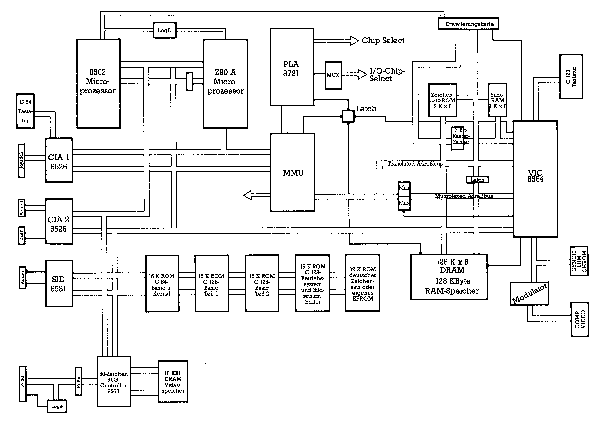
Der Farbspeicher ist aus Zeitgründen in einem gesonderten RAM untergebracht. Legt der VIC nämlich beim Auffrischen des Bildschirmes die Adresse an den Adreßbus, an der das momentan darzustellende Zeichen steht, so liegt diese Adresse gleichzeitg am Zeichen-RAM und am Farb-RAM. Weil das Farb-RAM aber einen eigenen Datenbus zum VIC hat (4 Bit, 24 (=16) verschiedene Farben), stehen der Bildschirmcode aus dem Video-RAM und die Farbinformation aus dem Farb-RAM gleichzeitig beim VIC bereit. Gleich neben dem Farb-RAM des VIC liegt das 2-KByte-Zeichengenerator-ROM. In diesem ROM befinden sich die Informationen, wie die Zeichen auf dm Bildschirm dargestellt werden sollen, also ob ein Punkt gesetzt wird oder nicht. Der Inhalt dieses ROMs wird beim Umschalten auf den 80-Zeichen-Modus in den RAM-Bereich des VDC 8563 kopiert.
128 KByte in 16 RAMs
Die 16 ICs in der unteren Ecke der Platine bilden zusammen den 128 KByte großen Hauptspeicher des C 128. Jeder einzelne dieser Chips hat eine Speicherkapazität von 8 KByte. Da es sich bei den verwendeten RAM-Typen um »dynamische« RAMs handelt, die zuerst die eine Hälfte des Adreßwortes und danach die zweite Hälfte auf den gleichen Anschlüssen verlangen, ist der Multiplexed Adreßbus notwendig. Weiterhin kommen wir jetzt vorbei an den ROMs, in denen Teil 1 und Teil 2 des Basic-Interpreters für den C 128-Modus gespeichert sind. Im linken der drei ROMs ist der Basic-Interpreter und das Kernel für den C 64-Modus enthalten. Gleich über diesem ROM liegt CIA 2. Für sie gilt natürlich den Registeraufbau betreffend dasselbe wie für CIA 1. Die Basisadresse beträgt hierbei jedoch $DD00. Die Aufgaben von CIA 1 sind aber andere als bei CIA 2. Port A dieser CIA ist zuständig für den Datenverkehr auf dem seriellen Bus, betrifft also hauptsächlich die Datenübertragung Computer - Floppy/Drucker. Eine Ausnahme bilden die Bits 0 und 1. Sie stellen die Adreßbits 14 und 15 für den VIC dar. Zusammen mit den Adreßbits 0 bis 13 des VIC ergibt sich die vollständige Adresse, auf die gerade zugegriffen werden soll. Das bedeutet für den Anwender, daß er den Bereich, auf den der VIC mit seinen 14 Adreßleitungen zugreifen kann (= 16KByte), innerhalb einer Speicherbank mit 64 KByte an verschiedenen Stellen plazieren kann. Er muß lediglich die Bits 0 und 1 von Register 0 der CIA 2 entsprechend abändern. Die Kombination 00 ergäbe dann, daß der VIC auf die unteren 16 KByte der Bank zugreift (von $0000 bis $3FFF). Bei 01 läge dieser Bereich dann von $4000 bis $7FFF und so weiter. Es ist jedoch zu beachten, daß sich alle Adressierungen des VIC, mit Ausnahme des Farb-RAMs, welches ja ohnehin einen Sonderstatus einnimmt, auf diesen Bereich beziehen, also auch der Zeichengenerator muß dort zu finden sein. Port B der CIA 2 ist für den Benutzer vollständig am User-Port herausgeführt. Ist eine RS232-Schnittstelle aufgesteckt, erfolgt die Steuerung des Datenverkehrs ebenfalls über diesen Port. Die Software dafür ist bereits im Betriebssystem integriert. Die beiden Timer sind auch für die Steuerung einer RS232-Cartridge zuständig, der Benutzer kann über sie jedoch frei verfügen, wenn eine solche Steckkarte nicht angeschlossen ist. Die IRQ-Ausgangsleitung der CIA 2 ist, im Gegensatz zu CIA 1, nicht mit der IRQ-Leitung des Prozessors verbunden, sondern mit seiner NMI-Leitung. Mit der CIA 2 lassen sich also keine IRQs, sondern nur NMIs erzeugen.
Neben der CIA 2 befindet sich noch ein ROM. Hier kann der Benutzer ROMs mit Programmen einstecken, die oft benötigt werden. In der deutschen Version des C 128 ist hier der deutsche Zeichensatz untergebracht. Neben diesem ROM befindet sich das 16-KByte Betriebssystem(Kernel)-ROM.
Zwei Video-Chips
Auf unserem Rundgang kommen wir nun an zwei Blechgehäusen vorbei. Die Deckel dieser Gehäuse wurden für das Foto abgenommen. Der obere Blechkasten schirmt den HF-Modulator ab, der aus dem Video-Signal des VIC-Chips ein für Fernseher »verständliches« Signal macht, das über die Antennenbuchse einem Ferseher zugeführt werden kann. Im unteren Gehäuse sind der RGB- und der PAL-Video-Teil untergebracht. Ganz links ist der Video-Controller VDC 8563 (RGB-Buchse zeigt Bild 7, 8) zu erkennen. Der VIC 8564 (Videobuchse zeigt Bild 9) sitzt der rechten Hälfte des Gehäuses. Diese beiden Video-Systeme sind genauso gegensätzliche Konkurrenten wie der 8502 und der Z80. Der VDC 8563, der im Gegensatz zum VIC 8564 in der Lage ist, 80 Zeichen pro Zeile darzustellen, wurde im C 128 aus zwei Gründen eingesetzt. Erstens, weil ein CP/M-fähiger Computer mit nur 40 Zeichen pro Zeile vergleichbar wäre mit einem Formel 1-Rennwagen, der durch einen Rasenmähermotor angetrieben wird. Mit 40 Zeichen pro Zeile ist keine professionelle Textverarbeitung oder Tabellenkalkulation zu realisieren.
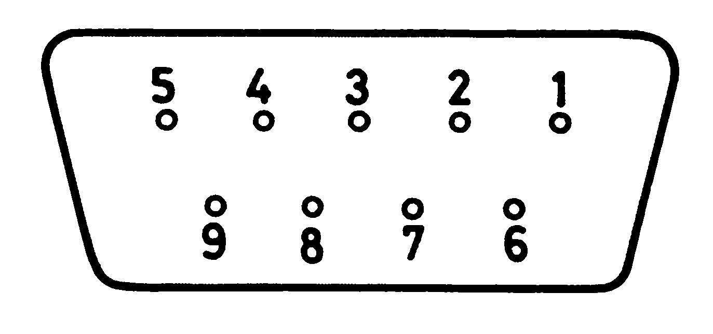
| Pin | Signal |
|---|---|
| 1 | Masse |
| 2 | Masse |
| 3 | Rot |
| 4 | Grün |
| 5 | Blau |
| 6 | Intensität |
| 7 | Monochrom-Signal |
| 8 | Horizontale Synchronisation |
| 9 | Vertikale Synchronisation |
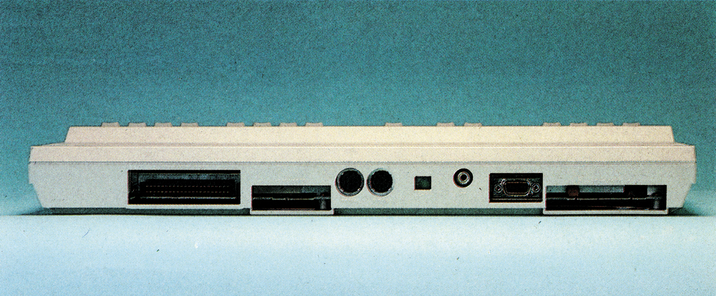
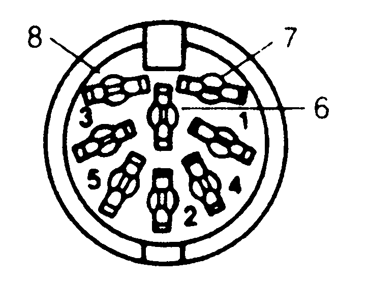
| Pin | Signal | Pin | Signal |
|---|---|---|---|
| 1 | LUMINANCE | 6 | CROMINANZ |
| 2 | GND | 7 | O. BELEGUNG |
| 3 | AUDIO OUT | 8 | O. BELEGUNG |
| 4 | VIDEO OUT | ||
| 5 | AUDIO IN |
Der zweite und gewichtigere Grund für die Verwendung des VDC 8563 ist der, daß der VIC 8564 bei einer Taktfrequenz von über 1 MHz »nicht mehr mitkommt«. Das würde für den Rennwagen bedeuten, nun gänzlich ohne Antrieb dazustehen. Manche werden sich sicherlich fragen, wozu denn eigentlich der VIC dann noch da ist. Die Antwort fällt nicht schwer: Ohne den VIC wäre der C 128 nicht mehr voll kompatibel zum C 64. Daß der VIC bei höheren Taktfrequenzen nicht mehr mitkommt liegt daran, daß er die Taktlücken des Prozessors ausnutzt, um seine Bildwiederholinformation aus dem Speicher zu holen. Mit steigender Frequenz werden diese Taktlücken natürlich kürzer, und damit zu kurz für den VIC. Der VDC besitzt aber ein eigenes, 16 KByte großes RAM und ist damit nicht mehr auf die Taktlücken des Prozessors angewiesen. In diesem Speicherbereich sind für den 8563 alle Daten gespeichert. Dieses RAM ist jedoch nicht im Speicherbelegungsplan des C 128 zu finden, sondern direkt an den VDC angeschlossen. Ansprechbar ist dieses RAM indirekt über zwei Register des VDC.
Der VDC 8563 besitzt 37 Steuerregister (Tabelle 2), deren Beschreibung den Rahmen dieses Artikels sprengen würde. Interessant ist jedoch, daß die Register des VDC nicht einfach direkt anzusprechen sind wie beispielsweise bei der CIA oder dem VIC. Es reicht also nicht, einfach die Basisadresse (beim VDC $D600) und die Registernummer zu addieren. Die Adressierung der Register erfolgt relativ. Man schreibt in die Adresse $D600 die Nummer des angesprochenen Registers und erhält im Gegenzug vom VDC in Adresse $D601 den Inhalt des angesprochenen Registers. Soll der Inhalt eines Registers geändert werden, schreibt man in Adresse $D601 den betreffenden Wert ein, nachdem das Register mit $D600 spezifiziert wurde. Will man zum Beispiel eine Adresse des VDC-eigenen RAMs ändern, verfährt man folgendermaßen:
| REG # | |||||||||
|---|---|---|---|---|---|---|---|---|---|
| 0 | HT7 | HT6 | HT5 | HT4 | HT3 | HT2 | HT1 | HT0 | Horizontal Total |
| 1 | HD7 | HD6 | HD5 | HD4 | HD3 | HD2 | HD1 | HD0 | Horizontal Displayed |
| 2 | HP7 | HP6 | HP5 | HP4 | HP3 | HP2 | HP1 | HP0 | Horizontal Sync Position |
| 3 | VW3 | VW2 | VW1 | VW0 | HW3 | HW2 | HW1 | HW0 | Vert/Horz Sync width |
| 4 | VT7 | VT6 | VT5 | VT4 | VT3 | VT2 | VT1 | VT0 | Vertical Total |
| 5 | – | – | – | VA4 | VA3 | VA2 | VA1 | VA0 | Vertical Total Adjust |
| 6 | VD7 | VD6 | VD5 | VD4 | VD3 | VD2 | VD1 | VD0 | Vertical Displayed |
| 7 | VP7 | VP6 | VP5 | VP4 | VP3 | VP2 | VP1 | VP0 | Vertical Sync Position |
| 8 | – | – | – | – | – | – | IM1 | IM0 | Interlace Mode |
| 9 | – | – | – | CTV4 | CTV3 | CTV2 | CTV1 | CTV0 | Character Total Vertical |
| 10 | – | CM1 | CM0 | CS4 | CS3 | CS2 | CS1 | CS0 | Cursor Mode Start Scan |
| 11 | – | – | – | CE4 | CE3 | CE2 | CE1 | CE0 | Cursor End Scan Line |
| 12 | DS15 | DS14 | DS13 | DS12 | DS11 | DS10 | DS9 | DS8 | Display Start Address high |
| 13 | DS7 | DS6 | DS5 | DS4 | DS3 | DS2 | DS1 | DS0 | Display Start Address low |
| 14 | CP15 | CP14 | CP13 | CP12 | CP11 | CP10 | CP9 | CP8 | Cursor Position high |
| 15 | CP7 | CP6 | CP5 | CP4 | CP3 | CP2 | CP1 | CP0 | Cursor Position low |
| 16 | LPV7 | LPV6 | LPV5 | LPV4 | LPV3 | LPV2 | LPV1 | LPV0 | Light Pen Vertical |
| 17 | LPH7 | LPH6 | LPH5 | LPH4 | LPH3 | LPH2 | LPH1 | LPH0 | Light Pen Horizontal |
| 18 | UA15 | UA14 | UA13 | UA12 | UA11 | UA10 | UA9 | UA8 | Update Address high |
| 19 | UA7 | UA6 | UA5 | UA4 | UA3 | UA2 | UA1 | UA0 | Update Address low |
| 20 | AA15 | AA14 | AA13 | AA12 | AA11 | AA10 | AA9 | AA8 | Attribute Start Adr high |
| 21 | AA7 | AA6 | AA5 | AA4 | AA3 | AA2 | AA1 | AA0 | Attribute Start Adr low |
| 22 | CTH3 | CTH2 | CTH1 | CTH0 | CDH3 | CDH2 | CDH1 | CDH0 | Character Tot (h) Dsp (v) |
| 23 | – | – | – | CDV4 | CDV3 | CDV2 | CDV1 | CDV0 | Character Dsp (v) |
| 24 | COPY | RVS | CBRATE | VSS4 | VSS3 | VSS2 | VSS1 | VSS0 | Vertical smooth scroll |
| 25 | TEXT | ATB | SEMI | D8L | HSS3 | HSS2 | HSS1 | HSS0 | Horizontal smooth scroll |
| 26 | FG3 | FG2 | FG1 | FG0 | BG3 | BG2 | BG1 | BG0 | Foregnd/Bgnd Color |
| 27 | AI7 | AI6 | AI5 | AI4 | AI3 | AI2 | AI1 | AI0 | Address Increment/Row |
| 28 | CB15 | CB14 | CB13 | RAM | – | – | – | – | Character Base Address |
| 29 | – | – | – | UL4 | UL3 | UL2 | UL1 | UL0 | Underline scan line |
| 30 | WC7 | WC6 | WC5 | WC4 | WC3 | WC2 | WC1 | WC0 | Word Count |
| 31 | DA7 | DA6 | DA5 | DA4 | DA3 | DA2 | DA1 | DA0 | Data |
| 32 | BA15 | BA14 | BA13 | BA12 | BA11 | BA10 | BA9 | BA8 | Block Start Address high |
| 33 | BA7 | BA6 | BA5 | BA4 | BA3 | BA2 | BA1 | BA0 | Block Start Address low |
| 34 | DEB7 | DEB6 | DEB5 | DEB4 | DEB3 | DEB2 | DEB1 | DEB0 | Display Enable Begin |
| 35 | DEE7 | DEE6 | DEE5 | DEE4 | DEE3 | DEE2 | DEE1 | DEE0 | Display Enable End |
| 36 | – | – | – | – | DRR3 | DRR2 | DRR1 | DRR0 | DRAM Refresh Rate |
| – STATUS |
– LP |
R5 VBLANK |
R4 – |
R3 – |
R2 – |
R1 – |
R0 – |
| D7 | D6 | D5 | D4 | D3 | D3 | D2 | D0 |
| ALT | RVS | UL | FLASH | R | G | B | I |
Beschreibung der MAPPED-Register:
$D600: Lesezugriff ergibt STATUS
Schreibzugriff setzt Registerinhalt
$D601: Daten: Ein-/Ausgabe
| Zeichen-Speicher: | $0000...$07CF |
| Attribut-Speicher: | $0800...$0FCF |
| Zeichengenerator: | $2000...$3FFF |
- POKE 54784,18 – als Register wird 18 ausgewählt. Register 18 und 19 bestimmen im High/Low-Byte-Format die angesprochene RAM-Adresse.
- POKE 54785, (Adresse High-Byte) – das High-Byte der Adresse wird in Register 18 geschrieben
- POKE 54784,19 – Auswahl: Register 19
- POKE 54785, (Adresse Low-Byte) – das Low-Byte der Adresse kommt nach Register 19
- POKE 54584,31 – jetzt wird Register 31 angesprochen. Ins Register 31 wird der Wert geschrieben, der im Speicher abgelegt werden soll.
- POKE 54585, (Wert) – man sieht, die Handhabung ist etwas unständlich und gewöhnungsbedürftig. Im VDC 8563 sind nicht, wie im VIC, alle Register für den Programmierer nutzbringend. Viele werden zum Beispiel für Synchronisationszwecke benutzt und sollten oder dürfen vom Programmierer nicht verändert werden. Es steckt aber trotzdem eine schier unüberschaubare Vielzahl von Variationsmöglichkeiten in diesem Chip, denen man nur durch Ausprobieren auf die Spur kommen kann. Der VDC 8563 gestattet sogar eine hochauflösende Grafik mit 640 (!) mal 200 Punkten. Die Grafikbefehle des Basic 7.0 sind hier jedoch nicht wirksam. Entsprechende Programme sind in der einschlägigen Literatur zu finden. Allerdings verlangt der VDC 8563 nach einem RGB-Monitor, will man sich nicht mit Schwarz/Weiß begnügen. Dies ist auch der Grund dafür, daß man für den C 128 eigentlich zwei Monitore braucht: Einen RGB-Monitor für den 8563 und einen Composite-Monitor oder einen Fernseher für den 8564. Es gibt aber inzwischen genügend Monitore, die mit diesen beiden Normen arbeiten können.
1 MHz oder 2 MHz - Wie hätten Sie es gern?
Einfacher als beim VDC 8563 gestaltet sich die Programmierung des VIC 8564, der ja schon hinlänglich aus dem C 64 bekannt ist. Es sind jedoch noch zwei Steuerregister hinzugekommen. Register 48 ist zuständig für die dem C 64 gegenüber erweiterte Tastatur. Register 49 bestimmt, ob sich der C 128 im 1-MHz- oder 2-MHz-Modus befindet. Um etwa die Rahmenfarbe auf Schwarz zu schalten, gibt man einfach die Befehlsfolge »POKE 53280,0« ein. »0« ist der Farbcode für Schwarz. Die Adresse 53280 ergibt sich, wenn man zur Basisadresse des VIC ($D000 oder 53248) die Registernummer für die Rahmenfarbe (Register 32) addiert. Dies funktioniert natürlich auch mit allen anderen Farben, die der VIC darstellen kann (Tabelle 3).
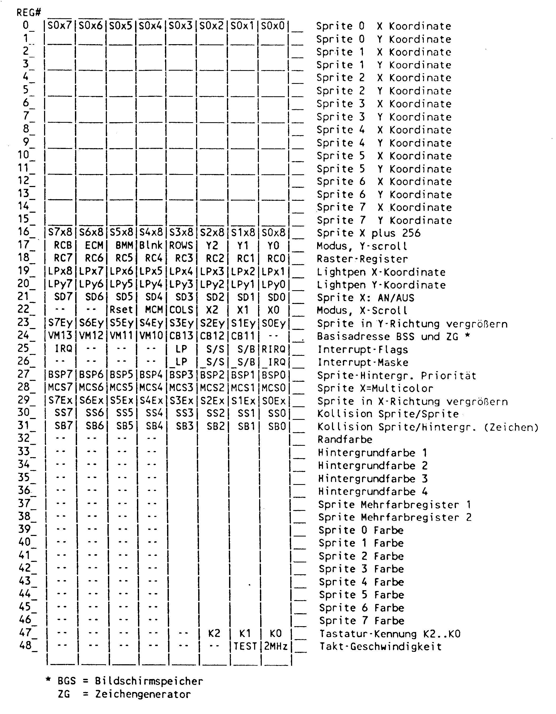
Die Auflösung des VIC 8564 beträgt in X-Richtung gerade die Hälfte der des VDC 8563. Der VIC kann horizontal 40 Zeichen darstellen. Die Zeilenzahl beträgt 25. Bei einer Punktmatrix von 8x8 Punkten bedeutet das für den HiRes-Bildschirm eine Auflösung von 320x200 Punkten. Allerdings sind in dieser Auflösung nur zweifarbige Grafiken möglich, nämlich in der Hintergrundfarbe und der Punktfarbe. Mehrfarbige Grafiken können im Multicolor-Modus erzeugt werden, wobei dann allerdings die Auflö-
Sprites - Kobolde am Bildschirm
sung von 320 Punkten in horizontaler Richtung auf 160 sinkt. Möglich sind jetzt allerdings fünf Farben, die Hintergrundfarbe sowie vier verschiedene Punktfarben. Auf diesen Grafik-Bildschirm beziehen sich auch die Grafikbefehle des Basic 7.0, wie etwa »Circle« oder »Graphic«.
Ein weiterer großer Vorteil des VIC gegenüber dem VDC sind die durch ihn verwalteten Sprites (engl. »Kobolde«). Sprites sind kleine Grafikgebilde mit einer Auflösung von 24x21 Punkten, die der Benutzer selbst programmiert. Mit diesen Sprites kann man allerhand anfangen. Man kann sie zum Beispiel frei über den gesamten Bildschirm bewegen, oder sie in X- oder Y-Richtung vergrößern. Sprites sind sogar im Multicolor-Modus darstellbar, allerdings auch nur mit einer geringeren Auflösung von 16x21 Punkten. Der C 128 hat einen Editor zum Erstellen von Sprites (Bild 10).
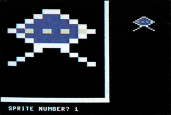
Sehr bequem macht es der VIC den Spiele-Programmierern. Will man zum Beispiel feststellen, ob das Raumschiff des Spielers mit irgendeinem Asteroiden kollidiert ist, kann dies über zwei Register geschehen, in denen für jeden Sprite getrennt aufgeführt ist, ob bereits eine Sprite-Sprite- oder eine Sprite-Hintergrund-Kollision stattgefunden hat.
Über ein weiteres Register kann der Programmierer die Priorität festlegen, in der ein Sprite auf dem Bildschirm dargestellt wird. Es bestehen zwei Variationsmöglichkeiten für die Priorität:
- Das Sprite verschwindet hinter den Zeichen auf dem Bildschirm (Hintergrund) oder
- das Sprite überdeckt den Bildschirminhalt.
Die Priorität der Sprites untereinander ist so geregelt, daß der Sprite mit der kleinen Nummer die höhere Priorität hat. Sprite 4 verdeckt also Sprite 5 und wird seinerseits von Sprite 3 verdeckt.
Weitere Register im VIC legen fest, ob der Sprite in X-, Y- oder beiden Richtungen vergrößert dargestellt wird, und zwar wieder für jeden Sprite einzeln. Über ein spezielles Register ist der VIC in der Lage, Interrupts auszulösen. Er kann den Prozessor mitten in seiner Arbeit unterbrechen und ihm mitteilen, daß dies oder jenes Ereignis eingetreten ist, wozu auch die Sprite-Kollisionen gehören. Der VIC kann aber auch einen sogenannten Rasterzeilen-Interrupt auslösen. Dieser Interrupt wird jedesmal dann erzeugt, wenn der Zeilenstrahl des Monitors eine bestimmte Zeile passiert hat. Man kann diesen Effekt dazu benutzen, hochauflösende Grafik mit einem Textbereich zu versehen, indem man zum Zeitpunkt des Rasterinterrupts vom HiRes-Modus auf den Textmodus schaltet. Der Grafikmodus muß natürlich auch wieder ab einer bestimmten Zeile eingeschaltet werden.
Interessant ist ebenfalls, daß das gesamte Timing des C 128 im 1 MHz-Modus vom VIC gesteuert wird. Nur so ist jederzeit gewährleistet, daß der VIC nicht die Taktlücken des Prozessors verpaßt, in denen er seine Bildwiederholinformationen aus dem Speicher beziehen kann.
Auch das Refresh der dynamischen RAMs wird komplett vom VIC übernommen, auch im 2 MHz-Modus. An seinem Ausgang stellt der VIC ein normiertes PAL- und Composite-Signal bereit. Dieses Signal wird von jedem Monitor mit Video-Composite-Eingang verstanden. Es kann aber auch jeder Fernseher über den eingebauten HF-Modulator angeschlossen werden. Allerdings leidet die Bildqualität dann schon erheblich. Das Signal muß ja schließlich erst im HF-Modulator moduliert und nachher im Empfangsteil des Fernsehers wieder demoduliert werden.
Bewährt: SID 6581
Ein weiterer alter Bekannter aus dem C 64 verrichtet seine Dienste gleich nebenan. Es handelt sich um den SID 6581 (SID = Sound-Interface-Device). Der SID bietet eine solche Fülle von Kombinationsmöglichkeiten, daß nur durch Ausprobieren ein Überblick über die Funktionen des SID gewonnen werden kann. Auch die Programmierung des SID wird durch das Basic 7.0 des C 128 unterstützt. Zu den besten Klangergebnissen kommt man aber immer noch durch Maschinensprache.
Die Funktionen des SID werden über 27 Register, die direkt adressierbar sind, gesteuert. Die Basisadresse ist $D400. Im SID sind drei verschiedene Oszillatoren untergebracht, die vollkommen unabhängig voneinander funktionieren. Für jeden Oszillator kann als Wellenform zwischen Dreieck, Sägezahn, Rechteck mit variablem Pulsverhältnis und weißem Rauschen gewählt werden. Das überstreichbare Frequenzspektrum reicht von 0 bis 8,2 kHz. Für jeden Oszillator gibt es zwei Register zur Frequenzwahl. Der in diese Register einzuschreibende Wert entspricht allerdings nicht der Frequenz, sondern ist ihr nur proportional. Für die folgenden Parameter existieren auch Register. Die Lautstärke kann in 16 Abstufungen von 0 bis 15 geregelt werden, allerdings nur für das, den SID verlassende, Mischsignal. Die sogenannte ADSR-Funktion (Bild 11) steht für Attack, Decay, Sustain und Release, was soviel bedeutet wie Anschwellen, Abfallen, Halten und Ausklingen. Diese Funktion bestimmt die Lautstärke und Dauer der Vorgänge. Jeder einzelne Parameter kann einen Wert von 0 bis 15 annehmen und ergibt für die Attack-Spanne Zeiten von 0,002 bis 8 Sekunden. Die Decay/Release-Dauer beträgt zwischen 0,006 und 24 Sekunden.
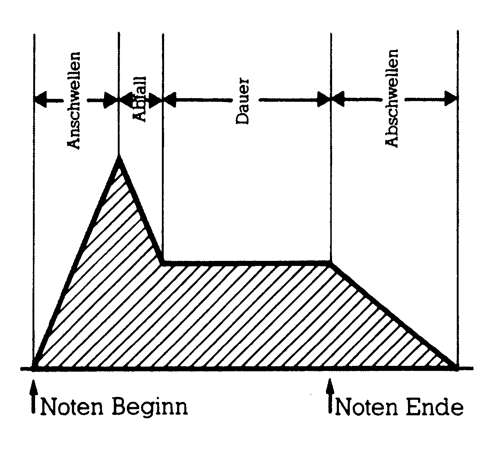
Den Oszillatoren ist ein Filter mit wählbarer Hoch-, Tief- und Bandpaß-Eigenschaft nachgeschaltet. Die Grenzfrequenzen sind wählbar. An den Eingang dieses Filters ist auch eine Leitung mit der Bezeichnung »Ext. In« angeschlossen, welche an der Audio/Video-Buchse herausgeführt ist. An diese Leitung kann ein externes Tonsignal angelegt werden, das durch den SID verfremdet werden kann. Das Geräusch kommt dann aus dem Lautsprecher des Fernsehers oder Monitors, sofern dieser einen Audio-Teil besitzt.
Wichtig für den Programmierer ist zu wissen, daß aus all diesen Registern mit PEEK nicht gelesen werden kann. Sollen Toneffekte programmiert werden, die auf den vorherigen Parametern aufbauen, muß der Programmierer diese zuvor zwischenspeichern. Eine besondere Stellung unter den drei Stimmen nimmt die Stimme 3 ein. Über zwei spezielle Register kann hier jederzeit die Hüllkurve und der Oszillatorzustand festgestellt werden. Der Wert aus dem Hüllkurven-Register ist proportional der momentanen Amplitude der ADSR-Funktion. Der Wert aus dem Oszillator-Register ist proportional der Momentan-Amplitude der gewählten Wellenform. Mit diesen Möglichkeiten kann man besonders bequem Zufallszahlen von Assemblerprogrammen aus generieren. Die Kurvenform sollte Rauschen sein. In erster Linie sind mit diesen beiden Registern sehr eindrucksvolle Toneffekte zu erzeugen, indem die Parameter der anderen Oszillatoren (zum Beispiel Frequenz, ADSR-Funktion) oder die Filterfrequenz in Abhängigkeit von diesen Registerinhalten gesetzt werden.
SID-Chip - Sound ist nicht alles
Neben den Sound-Möglichkeiten sind im SID 6581 noch zwei Analog/Digital-Konverter (kurz ADC) integriert. Ein ADC ist eine Schaltung, mit der ein analoger Wert, zum Beispiel eine Spannung, in einen digitalen Zahlenwert überführt wird. Das Problem der Analog/Digital-Wandlung besteht darin, daß man einen analogen Wert, der eine eigentlich unendlich kleine Abstufung besitzt, in einen digitalen Wert mit fest vorgegebenen Intervallen umwandeln muß. Der dabei entstehende Wandlungsfehler liegt bei einem kleinsten digitalen Schritt. Die ADCs im SID sind aber so ungenau und unlinear, daß sie von vornherein für genaue, quantitative Messungen ausscheiden. Bei der Anwendung für die Paddles fällt dies jedoch nicht sonderlich ins Gewicht. Bei der Messung wird über einen veränderlichen Widerstand (im Paddle ist dies ein Potentiometer) ein Kondensator aufgeladen. Gleichzeitig wird mit Meßbeginn eine Uhr gestartet. Erreicht die Spannung des Kondensators eine bestimmte Referenzspannung, wird der Uhr-Stand in ein Register übernommen und ist ein direktes Maß für den Widerstand. Jetzt wird sofort der Kondensator entladen und die Uhr erneut gestartet. Das Meßverfahren beginnt von vorne. An den C 128 sind vier Paddles anschließbar (zwei Paare). Der SID besitzt aber nur zwei Wandler. Die Leitungen mußten also »gemultiplexed« werden. Die Auswahl des aktuellen Paddle-Paares geschieht über Bit 6 und 7 von Port A der CIA 1.
Schnittstellen zur Außenwelt
Zum Abschluß unseres kleinen Rundganges durch die Hardware des Commodore 128 bleibt noch etwas zu den Verbindungen des C 128 zu seiner Umwelt zu sagen. Wie der C 64 hat der C 128 einen Expansion-Port, der von beiden Betriebsmodi angesteuert wird. Im C 64-Modus entspricht die Pinbelegung genau der des C 64. Im Gegensatz zum C 64 erlaubt der Expansion-Port des C 128 einen direkten Speicherzugriff (DMA, Direct Memory Access). Direkter Speicherzugriff bedeutet, daß ohne Umwege über den Prozessor in den Speicher des C 128 geschrieben oder der Speicher ausgelesen werden kann. Das wichtigste, um DMA realisieren zu können, ist, daß der Prozessor während des Zugriffs abgeschaltet bleibt. Beim C 128 macht das der VIC 8564. Er steuert den Daten- und Adreßbus so, daß Prozessor und DMA sich nicht ins Gehege kommen, was beim C 64 nicht immer sichergestellt ist. Bei
einem gleichzeitigen Bus-Zugriff von Prozessor und externem Gerät erweist sich der Prozessor meist als der Schwächere, was zu ernsthaften Problemen führen kann. Daß ein direkter Speicherzugriff ohne weiteres machbar ist, eröffnet dem C 128 gegenüber dem C 64 zusätzliche Einsatzgebiete in der Meßwerterfassung. Ein Meßgerät kann dadurch beispielsweise Meßwerte so schnell in den Speicher schreiben, daß eine Echtzeiterfassung eines Meßvorganges möglich ist. Eine andere Möglichkeit wäre der Anschluß eines Festplatten-Laufwerkes. Die Daten könnten damit viel schneller in den RAM-Bereich geladen oder aus dem Arbeitsspeicher geholt werden, wie wenn jedesmal der Prozessor jedes Bit vorher ein paarmal »umdreht«.
Der serielle Bus, Kassetten-Port und der User-Port des C 128 sind von den Anschlüssen her identisch mit denen des C 64. Die Bedienung des seriellen Bus wurde überarbeitet, so daß der C 128 zusammen mit dem neuen Commodore-Laufwerk 1571/1570 wesentlich schneller laden kann als der C 64 es kann. Im C 128-Modus lädt die 1571 sieben- bis achtmal so schnell wie die 1541. Ein HiRes-Bild mit 33 Blöcken benötigt nur noch ganze 3,2 Sekunden Ladezeit.
Schlußfolgerung
Der C 128 ist ein Zwitter. Bedingt durch die sicherlich löbliche Entscheidung von Commodore, den C 128 C 64-kompatibel zu machen ergaben sich bei der technischen Realisation natürlich einige umständliche Lösungen und Kompromisse. Die 8-Bit-Technologie ist bei Heimcomputern zwar noch weit verbreitet, dennoch zeigen einige Konkurrenten mit 16-Bit-Prozessoren, wo der Weg hingehen wird.
Auf der anderen Seite verfügt der C 128 bereits bei seiner Einführung über ein enormes Software-Potential (CP/M- und C 64-Software). Der Anwender kann also aus dem Vollen schöpfen. Das wesentliche Kaufkriterium wird aber der Preis sein. Wünschenswert wäre jeweils ein Kaufpreis von deutlich unter 1000 Mark für Computer, Floppylaufwerk und Monitor. Bei den bisherigen Preisen kommt man sehr schnell über 3000 Mark, und in dieser Preisklasse gibt es Alternativen.
(Bernhard Binz/hm)